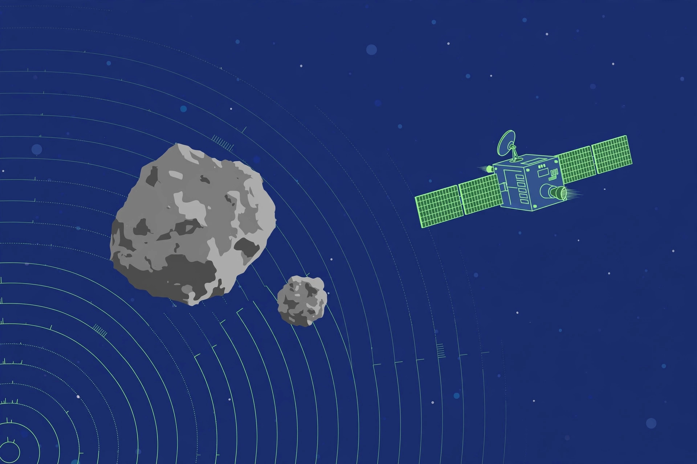

November 25, 2026 · 2 min read
Four Years Later, We Can Finally See the Crater Humanity Left on an Asteroid

Illustration by The Discovery Wire
Four years ago, humanity deliberately crashed a spacecraft into an asteroid for the first time. Now a second spacecraft has arrived to inspect the damage — and the damage is bigger than anyone expected.
NASA's DART mission slammed into Dimorphos on September 26, 2022, at 13,645 miles per hour, in the first test of whether we could change an asteroid's course. It worked: Dimorphos' orbit around its larger companion Didymos shortened by 33 minutes, far more than the 73-second minimum NASA had set.
A crater almost as wide as the asteroid
The European Space Agency's Hera spacecraft, launched in October 2024, arrived at the pair three weeks ago and is now about 30 kilometers away. Its first images, released Wednesday, show that the side of Dimorphos struck by DART has been flattened — the impact crater is the size of a sports stadium and extends across the asteroid's entire width. Dimorphos itself is only 151 meters (495 feet) wide.
The impact also knocked Dimorphos into a chaotic tumble. Before DART, it always showed the same face to Didymos, like our Moon does to Earth. Now, one mission scientist said, it moves more like a barrel thrown down the stairs.
Hundreds of unexpected boulders
The biggest surprise: hundreds of previously unknown boulders now encircle the asteroid pair, including more than 100 between the size of a football and a washing machine. Their origin is not yet clear — they may be debris from the DART impact, or material that came off Didymos. The boulders are also a practical problem: Hera carries two small CubeSats due to be released in January to venture close to Dimorphos, and the boulders present a collision risk.
In December, Hera is scheduled to move to about 13 kilometers for higher-resolution images and measurements that will let scientists calculate Dimorphos' mass — and therefore exactly how effective the DART impact was. Neither asteroid poses any danger to Earth; Dimorphos was chosen because its size is comparable to asteroids that could threaten our planet.
As Hera's mission manager put it: sixty-six million years ago an asteroid impact changed the course of life on Earth — today, for the first time, humanity is validating how to prevent such an event from happening again.
Source: CNN, Nov 25, 2026, reporting ESA Hera mission findings; cross-checked against ScienceAlert's coverage of the same ESA release.
Source: CNN — read the original report
← Back to latest stories